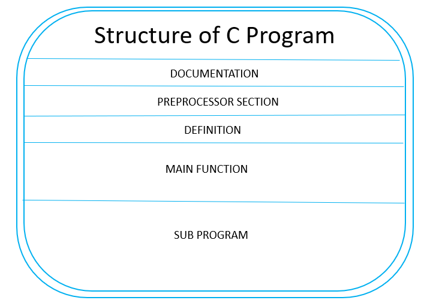

home
Structure of C
Structure of C Programming :

- Documentation :This section consists of the description of the program, the name of the program, and the creation date and time of the program.
- It is specified at the start of the program in the form of comments.
Documentation can be represented as:
// description, name of the program, programmer name, date, time etc.
or
/*
description, name of the program, programmer name, date, time etc.
*/
- Anything written as comments will be treated as documentation of the program and this will not interfere with the given code.
Preprocessor Section :
- All the header files of the program will be declared in the preprocessor section of the program.
- Header files help us to access other’s improved code into our code.
- A copy of these multiple files is inserted into our program before the process of compilation.
Example :
Definition :
- Preprocessors are the programs that process our source code before the process of compilation.
- There are multiple steps which are involved in the writing and execution of the program.
- Preprocessor directives start with the '#' symbol.
- The #define preprocessor is used to create a constant throughout the program
- Whenever this name is encountered by the compiler, it is replaced by the actual piece of defined code.
Example:#define long long ll
Global Declaration :
- The global declaration section contains global variables, function declaration, and static variables.
- Variables and functions which are declared in this scope can be used anywhere in the program.
Example:int num = 18;
Main() Function :
- Every C program must have a main function.
- The main() function of the program is written in this section.
- Operations like declaration and execution are performed inside the curly braces of the main program.
- The return type of the main() function can be int as well as void too.
- void() main tells the compiler that the program will not return any value.
- The int main() tells the compiler that the program will return an integer value.
Example:void main()
or
int main()
Sub Programs :
- User-defined functions are called in this section of the program.
- The control of the program is shifted to the called function whenever they are called from the main or outside the main() function.
- These are specified as per the requirements of the programmer.
Example:int sum(int x, int y)
{
return x+y;
}